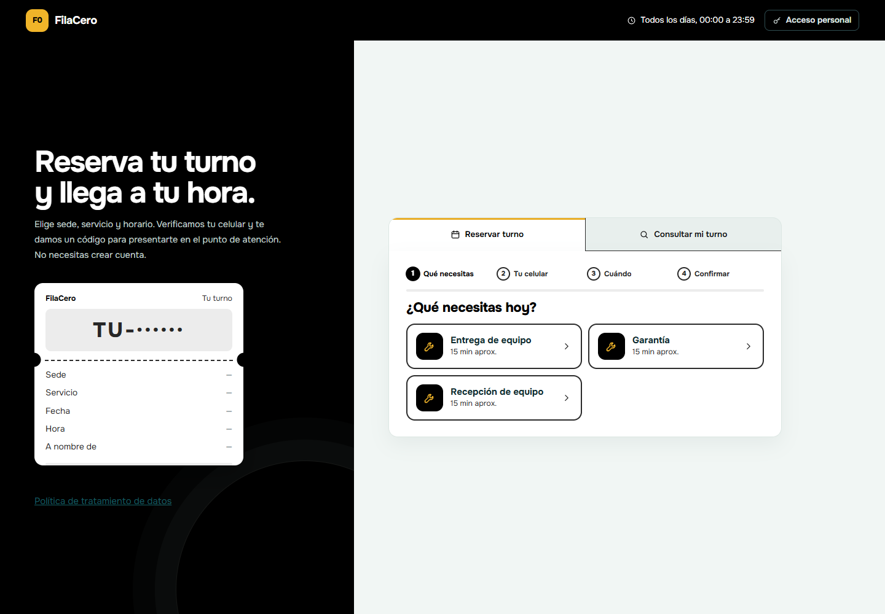
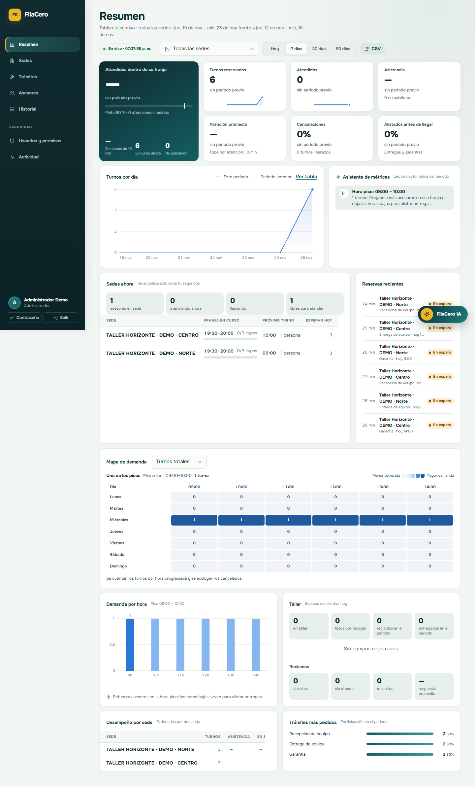

PRODUCTO
La atención tiene un recorrido.
FilaCero reúne la reserva, la preparación y el llamado para que puedas organizar un proceso completo.
Antes de la visita
Reserva por sede, servicio y franja. Consulta o cancelación del turno. Cupos configurables según la operación.
La verificación por celular requiere un proveedor de SMS en una implementación real; su costo se acuerda antes de activar el servicio.


Durante la atención
Cola del día, llamado, inicio, finalización y registro de ausencia. Preparación previa para servicios de entrega. Pantalla de sala con llamado visual y voz.
Para administrar
Sedes, servicios, personal, permisos, historial e indicadores. Los flujos de origen incluyen equipos, garantías y reclamos.

Alcance claro desde el principio.
El piloto utiliza las funciones verificadas. Integraciones, marca blanca, migraciones o cambios se evalúan y cotizan antes de desarrollarlos.
FilaCero no sustituye historia clínica, triaje, sistemas de laboratorio, facturación, ERP ni RUNT. No se entrega el código fuente como parte de una suscripción.
Revisemos tu recepción.
Una conversación de 12 minutos para recorrer el producto y evaluar un proceso concreto.
Solicitar demostración